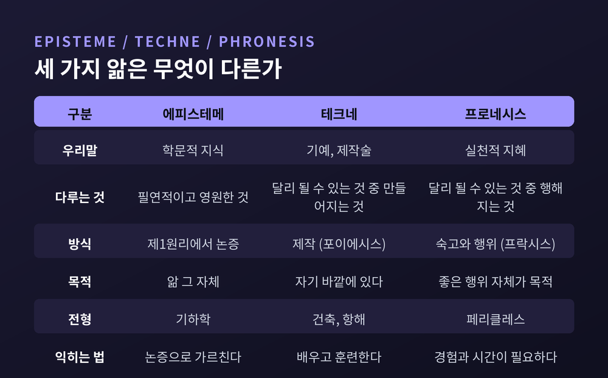
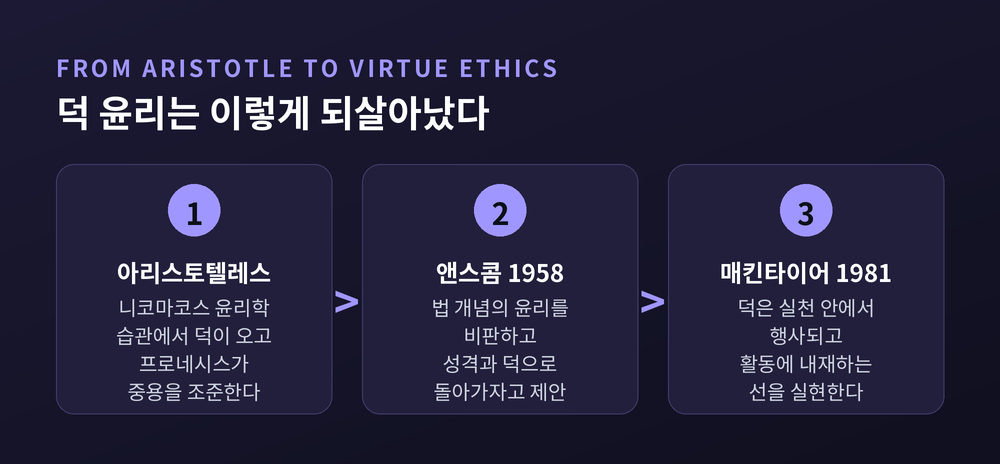

이번 글에서는 아리스토텔레스의 프로네시스(실천적 지혜)와 중용을 정리해 보겠습니다. 결론부터 말씀드리면 세 가지입니다. 중용은 산술적 중간이 아니고, 덕은 규칙을 외워서 생기지 않으며, 그 둘을 잇는 것이 프로네시스라는 이름의 능력입니다.
『니코마코스 윤리학』 6권에서 아리스토텔레스는 앎을 여러 갈래로 나눕니다. 그중 세 가지가 이 글의 축입니다.
에피스테메(episteme)는 학문적 지식입니다. 필연적이고 영원한 것, 달리 있을 수 없는 것을 다룹니다. 제1원리에서 논증으로 연역됩니다. 기하학이 그렇습니다.
테크네(techne)는 기예이자 제작술입니다. 달리 있을 수 있는 것을 다루되, 그중 '만들어지는 것'을 다룹니다. 건축과 항해가 여기 속합니다. 테크네의 목적은 자기 바깥에 있습니다. 구두는 신기 위해 만듭니다.
프로네시스(phronesis)는 실천적 지혜입니다. 역시 달리 있을 수 있는 것을 다루지만, 그중 '행해지는 것'을 다룹니다. 그리고 결정적인 차이가 하나 있습니다. 프로네시스의 목적은 바깥에 없습니다. 좋은 행위 그 자체가 목적입니다.
아리스토텔레스는 이렇게 정의합니다. "인간에게 좋고 나쁜 것들에 관하여 행위할 수 있는, 참되고 이성을 동반한 상태"(1140b5). 그가 예로 든 인물은 페리클레스입니다. 자기에게 좋은 것과 인간 일반에게 좋은 것을 함께 볼 줄 아는 사람이지요.

세 가지를 가르는 시금석 하나를 덧붙이겠습니다. 아리스토텔레스는 6권 5장에서 이렇게 씁니다. "기예에서는 일부러 잘못하는 사람이 더 낫지만, 실천적 지혜에서는 그 반대다"(1140b22).
일부러 오타를 낸 타자수는 실력이 나쁘지 않습니다. 할 줄 아는데 안 한 것이니까요. 그러나 일부러 비겁하게 군 사람은 더 나쁩니다. 이 비대칭이 프로네시스가 기술이 아니라 덕이라는 증거입니다.
중용(中庸)이라는 말은 오해를 많이 받습니다. 적당히, 무난하게, 튀지 않게. 대개 그런 뜻으로 쓰입니다.
아리스토텔레스가 말한 중용은 그것이 아닙니다. 2권 6장에서 그는 두 종류의 중간을 구분합니다.
하나는 대상에서의 중간입니다. 양 극단에서 등거리에 있는 지점입니다. 10과 2의 중간은 언제나 6입니다. 모든 사람에게 하나이고 동일합니다.
다른 하나는 우리에게 상대적인 중간입니다. 지나치지도 모자라지도 않은 것입니다. 이것은 하나가 아니며, 모두에게 같지도 않습니다.
그가 든 예가 명료합니다. 어떤 사람에게 10파운드는 너무 많고 2파운드는 너무 적다고 합시다. 그렇다고 트레이너가 6파운드를 처방하지는 않습니다. 전설적인 레슬러 밀론에게 6파운드는 너무 적고, 운동을 막 시작한 사람에게는 너무 많기 때문입니다.
중용은 계산의 결과가 아닙니다. 사람과 상황에 매번 다시 맞춰야 하는 조준입니다.
그래서 중용은 '적당히'가 아니라 '정확히'입니다. 아리스토텔레스는 다섯 개의 좌표를 제시합니다. 적절한 때에, 적절한 대상에 대해, 적절한 사람에게, 적절한 동기로, 적절한 방식으로(1106b21).
다섯이 동시에 맞아야 합니다. 그래서 그는 2권 9장에서 이렇게 못 박습니다.
"누구나 화를 낼 수 있다. 그건 쉽다. 그러나 올바른 상대에게, 올바른 정도로, 올바른 때에, 올바른 동기로, 올바른 방식으로 화내는 것은 아무나 할 수 없고 쉽지도 않다"(1109a26).
중용론을 도덕 상대주의로 읽는 분들이 계십니다. 상황에 따라 다르다면 결국 아무거나 괜찮다는 뜻 아니냐는 것이지요.
아리스토텔레스 본인이 이 오해를 미리 막아둡니다. 2권 6장 끝부분입니다.
모든 감정과 모든 행위에 중용이 있는 것은 아닙니다. 이름 자체에 이미 나쁨이 들어 있는 것들이 있습니다. 악의, 파렴치, 시기가 그렇고 간통, 절도, 살인이 그렇습니다. 이런 것들에는 과잉도 결핍도 중간도 없습니다.
그가 남긴 문장은 단호합니다. "적절한 상대와, 적절한 때에, 적절한 방식으로 간통하기" 같은 것은 없다는 것입니다. 그냥 하면 틀린 것입니다.
중용은 넓은 회색지대를 만드는 이론이 아닙니다. 오히려 조준을 요구하는 이론입니다.
이제 이 글의 제목으로 돌아가겠습니다. 덕은 왜 규칙이 아니라 습관에서 오는가.
아리스토텔레스는 어원에서 시작합니다. 성격의 덕을 뜻하는 그리스어 '에티케(ethike)'는 '습관'을 뜻하는 '에토스(ethos)'의 미세한 변형입니다. 우리가 오늘날 쓰는 '윤리(ethics)'라는 말 자체가 습관에서 나온 셈입니다.
그다음 그는 두 가지를 차례로 부정합니다.
첫째, 덕은 본성에 반해서 생기지 않습니다. "돌은 본성상 아래로 움직이므로, 만 번을 위로 던져 훈련시켜도 위로 움직이도록 습관화되지 않는다"(1103a20).
둘째, 덕은 본성적으로 이미 갖춰져 있지도 않습니다. 인간은 덕을 받아들일 수 있도록 본성적으로 적응되어 있을 뿐이고, 완성하는 것은 습관입니다.
여기서 그는 감각과 덕을 나란히 놓고 결정적인 대비를 만듭니다. 시각과 청각은 능력이 먼저고 사용이 나중입니다. 많이 봐서 눈이 생긴 것이 아니니까요. 덕은 정반대입니다. 먼저 행함으로써 얻습니다.
"우리는 집을 지어봄으로써 건축가가 되고, 리라를 연주함으로써 리라 연주자가 된다. 마찬가지로 정의로운 행위를 함으로써 정의로워지고, 절제 있는 행위를 함으로써 절제 있게 되고, 용감한 행위를 함으로써 용감해진다"(1103a32).
같은 원인이 덕을 만들고 또 파괴합니다. 리라를 연주함으로써 좋은 연주자도 나쁜 연주자도 나옵니다. 위험 앞에서 물러서는 데 익숙해지면 겁쟁이가 되고, 맞서는 데 익숙해지면 용감해집니다.
그래서 2권 1장은 이렇게 끝납니다. "어릴 때부터 어떤 습관을 들이는가는 작은 차이가 아니다. 아주 큰 차이, 아니 모든 차이를 만든다"(1103b23).
다만 여기에는 흔한 오해가 하나 붙습니다. 습관화가 곧 덕이라는 오해입니다.
아리스토텔레스가 쓴 단어는 헥시스(hexis)입니다. 이 말은 수동적으로 몸에 밴 버릇이 아닙니다. 무언가가 능동적으로 스스로를 붙들고 있는 상태를 뜻합니다.
『인터넷 철학 백과사전』(IEP)의 정리가 정확합니다. 습관화는 덕으로 가는 보조 수단이지 덕 자체가 아닙니다. 진짜 덕은 선택과 이해와 앎을 요구합니다. 남들이 하니까 친절한 것은 덕이 아닙니다. 그것이 옳은 방식임을 알아보고, 그 자체를 위해 선택해야 합니다.
여기서 두 축이 만납니다. 중용의 정의를 다시 보겠습니다.
"덕이란 중용에 놓인, 선택과 관련된 성격의 상태다. 그 중용은 우리에게 상대적이며, 로고스에 의해 — 실천적 지혜를 가진 사람이 규정할 그 로고스에 의해 — 규정된다"(1106b36).
문장의 마지막이 중요합니다. 중용의 기준이 공식이 아니라 사람에게 걸려 있습니다. 프로니모스, 즉 실천적 지혜를 가진 사람이 판단할 그 방식이 기준입니다.
왜 공식으로 못 박지 않았을까요. 아리스토텔레스가 직접 답합니다.
행위에 관한 논의는 윤곽으로만 주어져야 합니다. 정밀하게가 아니라. 그리고 개별 사례는 "어떤 기술이나 규정에도 속하지 않는다"고 그는 씁니다. "행위자 자신이 매번 그 상황에 무엇이 적절한지 고려해야 한다"는 것입니다. 의술과 항해술이 그렇듯이 말이지요(1104a5).
한 걸음 더 나아간 근거가 6권 8장에 있습니다.
젊은이는 기하학자와 수학자는 될 수 있습니다. 그러나 실천적으로 지혜로운 젊은이는 찾기 어렵다고 그는 말합니다. 이유는 간단합니다. 프로네시스는 보편만이 아니라 개별을 다루는데, 개별은 경험을 통해서만 익숙해지고, 경험을 주는 것은 시간의 길이이기 때문입니다(1142a11).
이것이 가장 실증적인 증거입니다. 덕이 규칙집이라면 열여덟 살도 외울 수 있습니다. 외워도 지혜로워지지 않는다는 사실이, 그것이 규칙이 아님을 보여줍니다.
그래서 아리스토텔레스는 프로네시스가 "궁극의 개별 사실"에 관계한다고 정리합니다. 그리고 그 개별은 학문적 지식의 대상이 아니라 지각(perception)의 대상입니다. 2권 9장의 짧은 문장이 이를 압축합니다. "판단은 지각에 달려 있다"(1109b23).
여기서 한 가지는 솔직히 인정해야 합니다. 이 대목이 신비주의로 읽힐 여지가 있다는 점입니다.
『스탠퍼드 철학백과』(SEP)는 이 오해를 명시적으로 차단합니다. 좋은 사람이 "각 경우에서 참을 보며 기준이자 척도가 된다"는 구절(1113a32)은, 그가 말로 표현할 수 없는 직관을 지녔다는 뜻이 아닙니다. 아리스토텔레스에게 좋은 사람은 숙고를 잘하는 사람이고, 숙고는 이성적 탐구의 과정입니다.
SEP는 한 절의 제목을 아예 이렇게 달았습니다. "윤리 이론은 결정 절차를 제공하지 않는다." 중용론은 의사결정 알고리즘으로 의도된 적이 없습니다. 덕이 왜 매력적인지 보여주고, 어떤 성질이 덕인지 체계화하는 것이 그 역할입니다.
6권 13장에 짚고 넘어갈 구분이 하나 더 있습니다.
영리함(deinotes)은 설정된 목표에 이르는 수단을 잘 찾는 능력입니다. 목표가 고귀하면 칭찬받지만, 나쁘면 교활함이 됩니다. 목표 자체는 묻지 않는 능력이지요.
자연적 덕은 타고난 기질입니다. 태어날 때부터 정의롭거나 용감한 성향 말입니다.
문제는 이성 없는 자연적 덕이 오히려 해롭다는 점입니다. 아리스토텔레스의 비유가 강렬합니다. "눈 없이 움직이는 튼튼한 몸이 크게 넘어지듯이"(1144b10). 힘은 있는데 볼 줄을 모릅니다.
여기서 그는 스승의 스승을 반박합니다. 소크라테스는 덕이 곧 앎이고, 따라서 덕이 규칙이자 이성적 원리 그 자체라고 보았습니다. 아리스토텔레스는 다르게 답합니다. 덕은 이성적 원리를 함축한다는 것입니다. 함축하는 것과 그것인 것은 다릅니다.
그리고 결론을 내립니다. "실천적 지혜 없이 엄밀한 의미에서 좋은 사람이 될 수 없고, 성격의 덕 없이 실천적으로 지혜로울 수도 없다"(1144b30).
습관이 재료를 만들고, 프로네시스가 그것을 볼 수 있게 합니다. 둘은 서로를 필요로 합니다.
한동안 이 이야기는 서구 윤리학의 중심에서 밀려나 있었습니다. 근대 이후의 도덕철학은 대체로 규칙의 언어로 쓰였기 때문입니다. 칸트의 정언명령과 밀의 최대 행복 원리가 그렇습니다.
전환점은 1958년입니다. G. E. M. 앤스콤이 학술지 『Philosophy』 33권에 「Modern Moral Philosophy」를 발표합니다.
앤스콤이 겨눈 것은 '법 개념의 윤리'입니다. 오직 의무와 책무만 다루는 윤리 말이지요. 그의 논지는 이렇습니다. 의무라는 개념은 입법자의 존재를 전제하는데, 세속화된 현대 사회는 더 이상 그 전제를 두지 않습니다. 전제가 사라졌는데 개념만 남았다는 것입니다.
대안으로 그가 제시한 것이 아리스토텔레스였습니다. 성격, 덕, 번영이라는 개념으로 돌아가자는 제안이었지요. 참고로 오늘날 널리 쓰이는 '결과주의(consequentialism)'라는 용어도 이 논문에서 나왔습니다.
두 번째 순간은 1981년입니다. 알래스데어 매킨타이어의 『After Virtue』입니다.
매킨타이어는 역사 속 수많은 덕 목록을 조사한 뒤, 그것들이 서로 양립하지 않는다는 사실을 확인합니다. 그리고 그 차이가 서로 다른 실천(practices)에서 비롯된다고 결론짓습니다. 덕은 일관된 사회적 활동 형태인 실천 안에서 행사되며, 그 활동에 내재하는 선을 실현하려 한다는 것입니다.
아리스토텔레스의 습관화가, 매킨타이어에게서는 역사적·사회적으로 구성된 실천 안의 훈련으로 확장된 셈입니다.

물론 이 흐름에도 비판이 따라붙습니다. IEP는 세 가지를 정리합니다. 자기중심적이라는 비판, 행위 지침을 주지 못한다는 비판, 도덕적 운에 너무 많이 기댄다는 비판입니다.
특히 두 번째는 뼈아픕니다. "덕 있는 사람이라면 할 법한 대로 하라"는 조언은 당장 무엇을 해야 할지 알려주지 않으니까요.
덕 윤리 쪽의 대답은 이렇습니다. 쉽고 즉각적인 답은 줄 수 없다, 그런 답이 존재하지 않기 때문이다. 대신 본보기가 되는 사람과, 평생에 걸친 판단력의 발달이 있을 뿐이라는 것입니다.
납득이 되실 수도 있고 안 되실 수도 있습니다. 저는 이것이 회피라기보다 정직한 인정에 가깝다고 생각합니다.
정리하면 이렇습니다.
에피스테메는 논증으로 가르칠 수 있고, 테크네는 배울 수 있습니다. 프로네시스는 시간을 요구합니다. 개별을 알아보는 눈은 겪어야 열리기 때문입니다.
중용은 계산이 아니라 조준입니다. 그리고 그 조준을 가능하게 하는 것은 규칙집이 아니라, 반복된 행위가 만들어낸 성격의 상태입니다.
"덕은 아는 것이 아니라, 되는 것입니다."
아리스토텔레스가 2권 2장에 남긴 문장으로 닫겠습니다. 우리는 덕이 무엇인지 알기 위해서가 아니라, 좋은 사람이 되기 위해 탐구한다고 그는 썼습니다. 이 글을 읽고 무엇이 남았느냐고 물으신다면, 아직은 잘 모르겠다고 답하겠습니다. 다만 오늘 한 번의 행위가 내일의 나를 조금 바꾼다는 말은, 이제 은유로 들리지 않습니다.